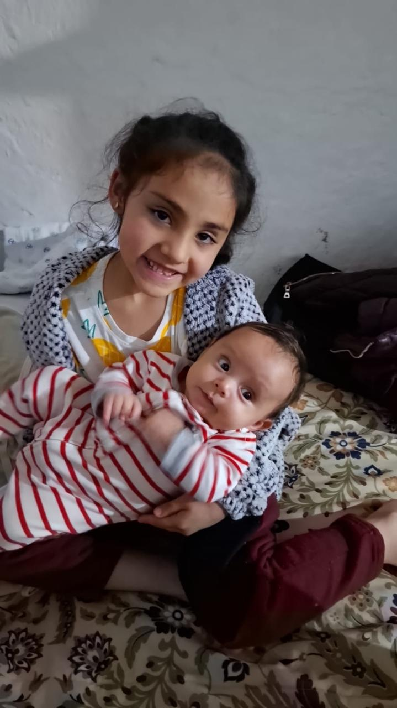
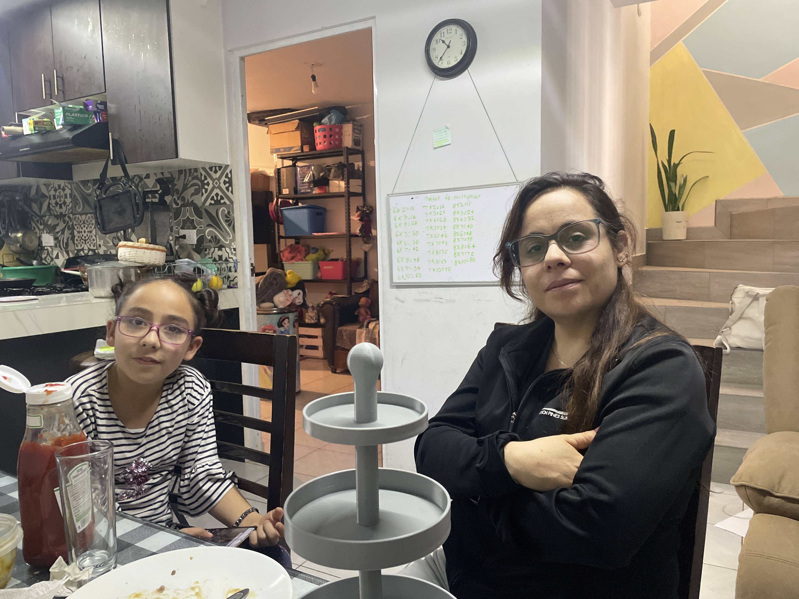

Recuerdo de mi Bautizo
Thiago Gutiérrez García
Diciembre 2025
Tlachichila, Nochistlán de Mejía, Zacatecas
"Bajo la luz de Dios, tu camino comienza, guiado por el amor y la fe de quienes te rodean."


📷 Ver galería completa
Gracias por ser parte de este día tan especial 💙